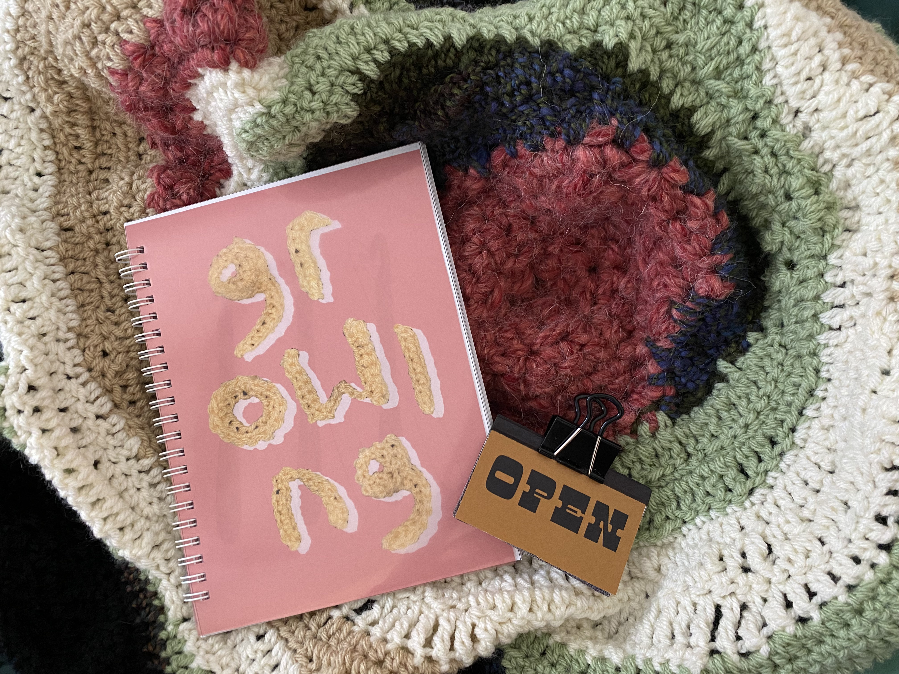
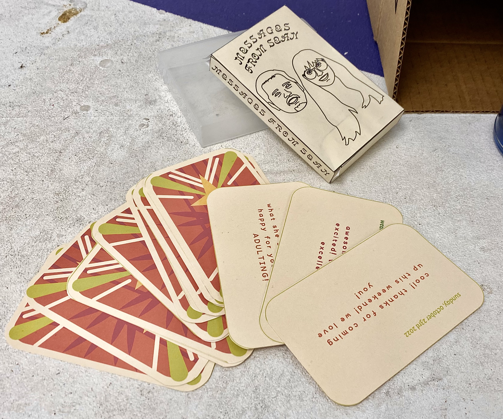
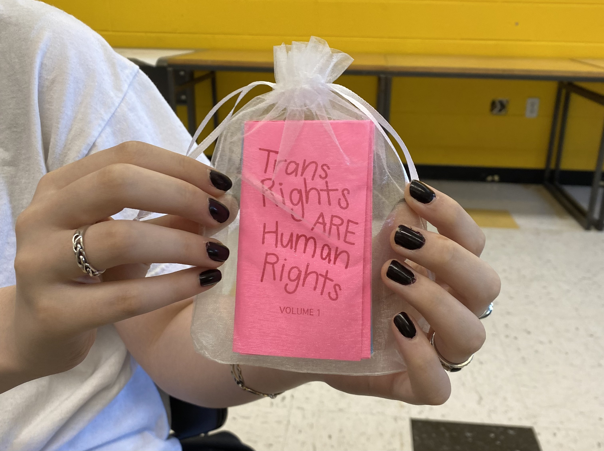
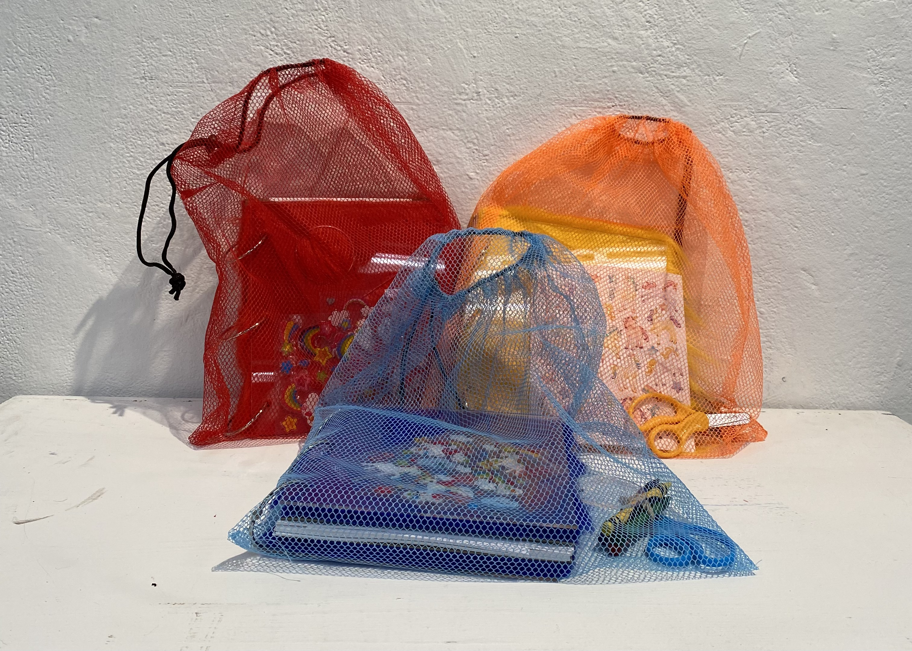
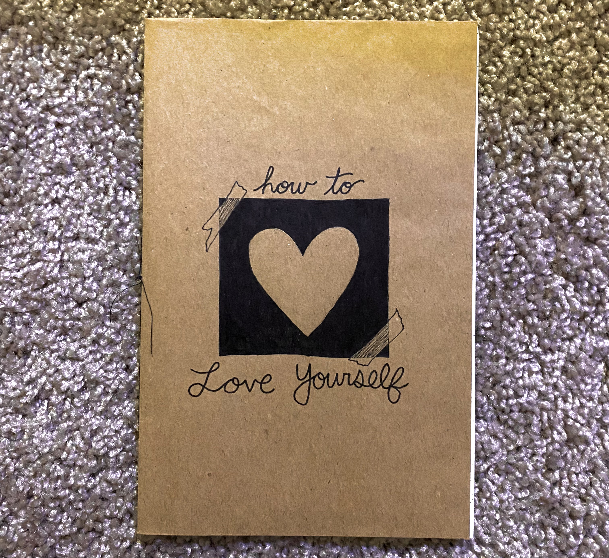
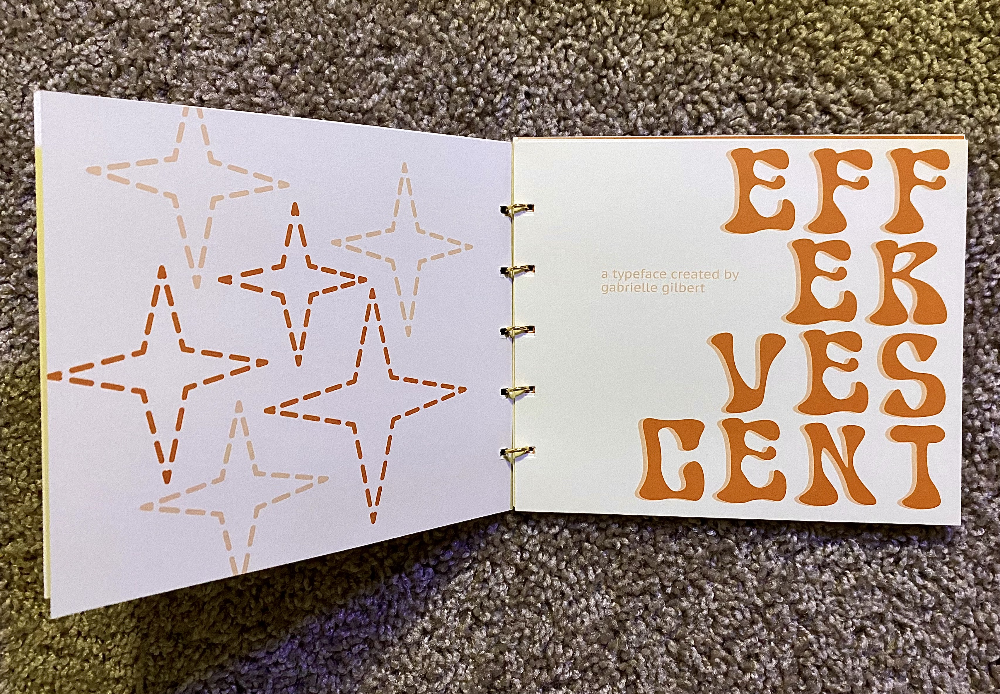

Growing: A Translation Machine
6" x 8" and 1" x 2"
This project involved a process where I would write a journal entry every day for several days, and afterwards I would crochet and add to the piece in the background of the image. The process was very freeform and was a translation of my feelings into physical work.
6" x 8" and 1" x 2"
This project involved a process where I would write a journal entry every day for several days, and afterwards I would crochet and add to the piece in the background of the image. The process was very freeform and was a translation of my feelings into physical work.

Messages from A Step-Father
4" x 2.5"
For this project, I wanted to show the relationship I have with my stepfather, Sean. I made a deck of cards with messages he has texted me which span over a year of our relationship. He has been a very great person in my life who has helped me through some of my toughest times, so I feel like his words of encouragement and kindess are some that everyone needs.
4" x 2.5"
For this project, I wanted to show the relationship I have with my stepfather, Sean. I made a deck of cards with messages he has texted me which span over a year of our relationship. He has been a very great person in my life who has helped me through some of my toughest times, so I feel like his words of encouragement and kindess are some that everyone needs.

Transgender Rights: A Zine Collection
2.5" x 4.25"
This is a three zine collection discussing Transgender Rights. The first volume introduces the basic terminology used, and I share my own opinion and story. The second volume introduces the topic of bathrooms, and argues that Transgender people should use whatever bathroom they feel comfortable in. The third volume explains statistics involving Transgender people in the United States and the issues they are currently facing along with stories from actual Transgender individuals.
2.5" x 4.25"
This is a three zine collection discussing Transgender Rights. The first volume introduces the basic terminology used, and I share my own opinion and story. The second volume introduces the topic of bathrooms, and argues that Transgender people should use whatever bathroom they feel comfortable in. The third volume explains statistics involving Transgender people in the United States and the issues they are currently facing along with stories from actual Transgender individuals.

Childhood
7.5" x 8.5"
This was a group collaboration that revolved around the theme of "childhood." In the group of 5 people, we each created our own spread about a topic of our choice and spread with a little game to play. Additionally, there are paper dolls of each author included amongst the pages of the books.
7.5" x 8.5"
This was a group collaboration that revolved around the theme of "childhood." In the group of 5 people, we each created our own spread about a topic of our choice and spread with a little game to play. Additionally, there are paper dolls of each author included amongst the pages of the books.

A Handmade Web: My Class Website
html/css
My first ever website that I created by hand using code. For my web design class, I created a website that held all of my projects and excercises that I completed for the course.
You can visit the website here!
html/css
My first ever website that I created by hand using code. For my web design class, I created a website that held all of my projects and excercises that I completed for the course.
You can visit the website here!

How To Love Yourself
4.25" x 5.5"
This was a final project for the first semester of my graphic design courses, where I created a guide on how to love yourself. This publication mostly focused on my own journey on how I was able to get somewhat better at accepting and loving myself. This piece was really theraputic for me to make as I was really struggling with my mental health months before its creation, and I felt like I was in a better place mentally.
4.25" x 5.5"
This was a final project for the first semester of my graphic design courses, where I created a guide on how to love yourself. This publication mostly focused on my own journey on how I was able to get somewhat better at accepting and loving myself. This piece was really theraputic for me to make as I was really struggling with my mental health months before its creation, and I felt like I was in a better place mentally.

Effervescent: A Typeface Speciman Book
6.5" x 6.25"
This publication was created to showcase a typeface I created called "Effervescent." The typeface itself is bubbly and fun, and I enjoyed the process of creating my first ever font.
6.5" x 6.25"
This publication was created to showcase a typeface I created called "Effervescent." The typeface itself is bubbly and fun, and I enjoyed the process of creating my first ever font.